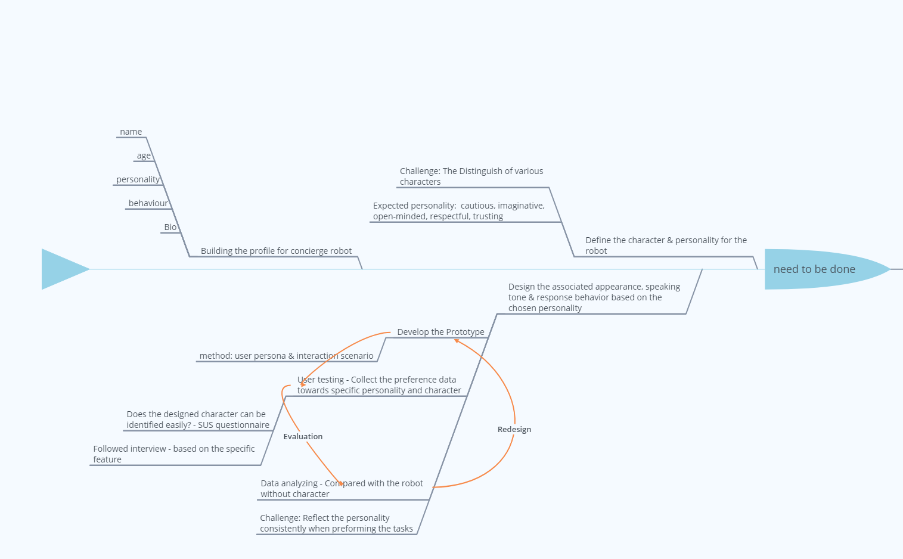

Designing a socially interactive robot with its own character and personality for the purpose of library concierge
Qi Lu - 45495175
Aim & purpose
The robot will be used as a working concierge in the UQ library after hours, who can help answer simple and repeatable inquries.
What we want to do is to make the interaction between humand and robot more engaging and still useful.
My aim of this research is to differentiate our robot from others by giving it a personality, which makes the robot behaves and speaks
like human.
The robot

The robot we are woking on, who can talk with users, use gestures to show personality.
Background
The robot nowadays is no longer a toy playing with human, various work can be done with the support of assistive robot. The robot can be a partner, a friend and a helping assistant that lives with us. The idea of designing the personality for the robot comes from the personification phenomenon in Japan. There are two successful examples, one is Hatsune miku, who is marketed as a virtual idol using the sofrware voicebank , another example is the character called Blathers in the game of Animal Crossing, who is an owl special character serves the director of the museum .
Work I have done
Collect data - Survey
Before the design phase, several surveys were conducted to collect data regards to the opinion that people think about the robot and how they like and dislike with the robot working at the libaray. There was also an initial survey about the prefered personality and appearance of the robot.

BrainStorm - Concept map
After collected all the data, I categoried the feedback and selected some of interesting and valueable statement to further analyse the ideas behind these statements.
Scenario design
Based on the result of previous analysis and further researches, two presonalities were selected - openness, agreeableness. A opposite one (without personality) was also designed for comparision. Three scenarios were designed to be tested, which were differentiate from speaking tone, gestures and lighting (may includes appearance as well).
Methodology
- Human-centred design and Research through Design approach
- The design walkthrough and the Technology Acceptance Model (TAM) for the evaluations. 
Potential Outcome
- The personality truly engage the interaction.
- The personality has little difference and people cannot differentiate them
- People have distiguish the personality but think this is not the reason ehy they want to interact with the robot
Reference
- [1] Lee, S.-y., Kim, S., Lee, G., and Lee, J.: ‘Robots in Diverse Contexts: Effects of Robots Tasks on Expected Personality’. Proc. Companion of the 2018 ACM/IEEE International Conference on Human-Robot Interaction, Chicago, IL, USA2018 pp. Pages
- [2] Martínez-Miranda, J., Pérez-Espinosa, H., Espinosa-Curiel, I., Avila-George, H., and Rodríguez-Jacobo, J.: ‘Age-based differences in preferences and affective reactions towards a robot's personality during interaction’, Computers in human behavior, 2018, 84, pp. 245-257
- [3] Tay, B., Jung, Y., and Park, T.: ‘When stereotypes meet robots: The double-edge sword of robot gender and personality in human–robot interaction’, Computers in human behavior, 2014, 38, pp. 75-84